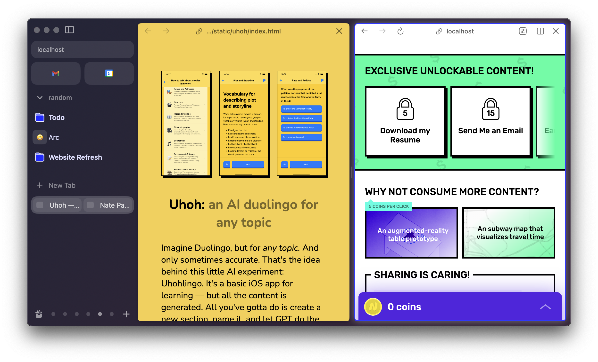

I joined the Browser Company as founding designer in 2020, with nothing other than a vague idea that browsing could be better than this. In the beginning, I worked with our founding engineers to rapidly prototype browser features, exploring the space and searching for product-market fit amongst ourselves. In the time since, I've had the privilege of building and refining Arc with an incredible team of designers — Kristina Varshavskaya, Dustin Senos, Karla Cole, Omar Elfanek, Dara Oke, Peter Vidani and others. Some day I'll write up the story of the product. Until then, here are some random artifacts.
Some parts of Arc I designed initial versions of, or worked closely on: Command Bar, Split View, Focus Mode (hidden sidebar), Little Arc, Notes, Easel, Previews, PIP, Mini Audio Player, Boosts, Arc Max, Arc for iOS.